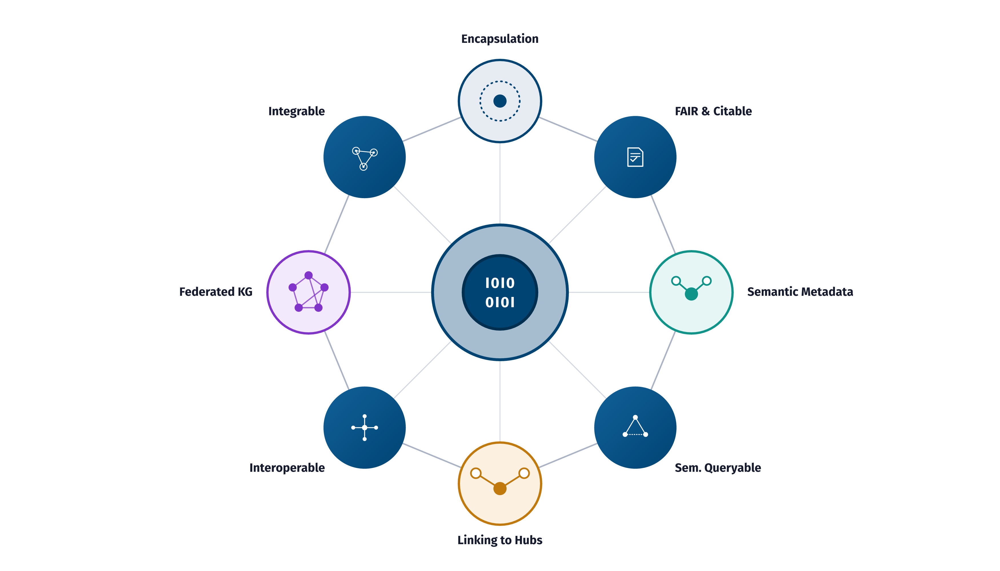
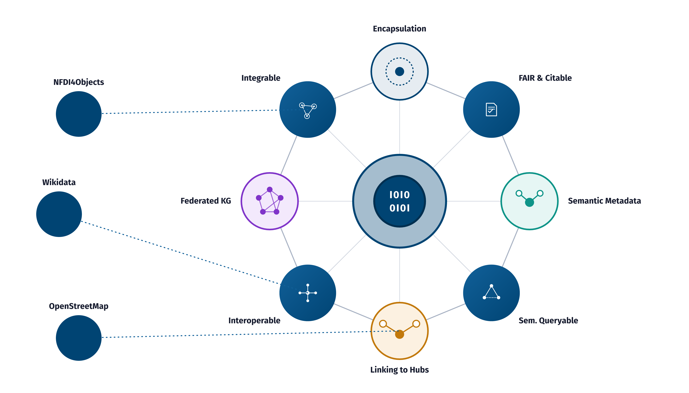

Talk slides: closing
The closing slides on the FDO sphere and the community hubs.

TC.1Closing slide, variant A: the eight badges as a ring around the FDO sphere.
FDOx-squirrel, fdox-visuals (Florian Thiery, LEIZA). Code: MIT licence.



TC.2Closing slide, variant B: the same ring, with dotted links to the community hubs NFDI4Objects, Wikidata and OpenStreetMap.
FDOx-squirrel, fdox-visuals (Florian Thiery, LEIZA). Code: MIT licence.